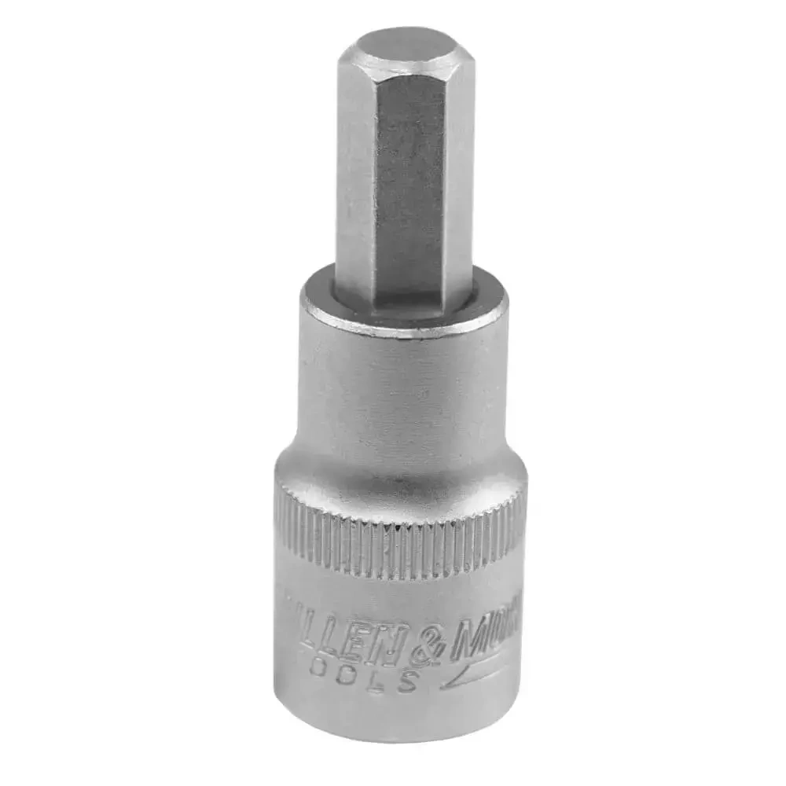

Recently I bought a new tools case to replace my old 3 cases with almost similar tools. Almost in all tool cases there are bits in different sizes and ratchet with sockets in different sizes.
The problem is that when you put the socket into the ratchet you cannot use any bit-hex size, because they are not compatible with each other. Even one of the sockets almost fits the bit size, it still risky to use it, because the bit can slip out of the socket and damage the screw head.
After a short research, an adapter is found:

But yet, the problem persists, because this adapter is a socket folded around the bit, meaning it not reusable.
You have to buy a hex-bit with a socket for each bit size you have. Not very cool.
After more research it turns out the ratchets have different sizes like 1/2, 3/8, 1/4 and 1/8 inch, which is a standard for the square drive of the ratchet. The socket from one side matches the square ratchet shape (female connector) according to the size and the another side is a hexagon shape that is measured in millimeters (5.5mm, 6mm, 7mm) (again female connector). Usually used for nuts and bolts applied in car/machinery mechanics.
The bit-hex shape is rarely measured in millimeters, but rather in inches (1/4", 5/16", 3/8"). That's the reason
why any socket cannot perfectly fit the bit size. Most of the hex-bit sets are 1/4" - which is the my case.
In Short: I need a 1/4 square to 1/4 hex adapter
Bingo! A lot of results appears in internet. Now need to decide how much to spend about that, because different brands offer almost the same adapter, but some of them have different little features. I don't want to make advertising, but one of them is the Wera. They offer different tools, for different purposes and of course high quality and high price. The adapter they offers has a spring loaded ball bearing easy to use with just a gentle push to insert/remove the bit. Other cheap adapters doesn't have this feature, and you need to push/pull harder to insert/remove the bit. I really don't like such usage. Also for my luck local shops sales products of this German brands, so I can save on shipping costs.
Not last, but important, an article that helped me a lot of gather all the needed information at once Screwdriver and hex bit size standards and types . It seems that the author experienced the same problem as I did, and he wrote a very detailed article. It also seems that is site for bikes maintenance that may help me a lot in future. Now I can use my ratchet with all the bits I have 😊.
Its simple, you got all the parts you need to use, go to the first shop and ask the staff "-Hello, I need to connect this with that, how to do it?". Eventually the issue will be solved, but you will not learn anything new.
{kind=link}
{kind=link}